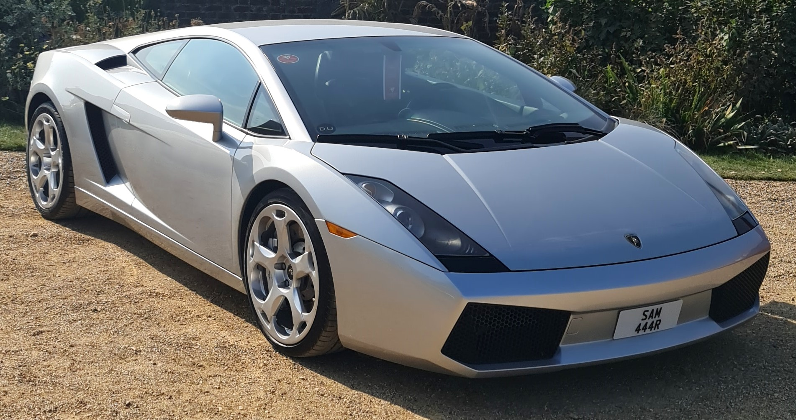

Lamborghini Gallardo (2001)

Exemplo de modelo 2004
Oou falar um pouco sobro o temido carro Lamborghini Gallardo de 2004. O modelo de 2004 do Lamborghini Gallardo é um carro esportivo de dois lugares que foi produzido pela Lamborghini de 2003 a 2013. O modelo de 2004 tinha um motor V10 de 5,0 litros que produzia 500 cavalos de potência1. O carro tinha uma velocidade máxima de 309 km/h e podia acelerar de 0 a 100 km/h em 4,2 segundos1. O modelo de 2004 tinha um consumo médio de combustível de 19,5 litros por 100 km2. O carro tinha um design moderno e atraente, com portas que se abrem para cima e faróis dianteiros agressivos. O modelo também oferecia um espaço interno confortável e um porta-malas espaçoso1.
Além dessas características, o Lamborghini Gallardo tem uma história interessante. O modelo foi nomeado em homenagem a uma raça de touros de luta espanhóis, e a Lamborghini tem uma longa tradição de nomear seus carros em homenagem a touros e outras criaturas mitológicas 3. O modelo também foi usado como carro de polícia na Itália, com o motor V10 de 520 cavalos de potência a 7800 rpm, capaz de atingir uma velocidade máxima de 318 km/h